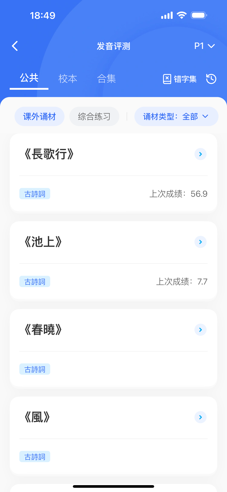
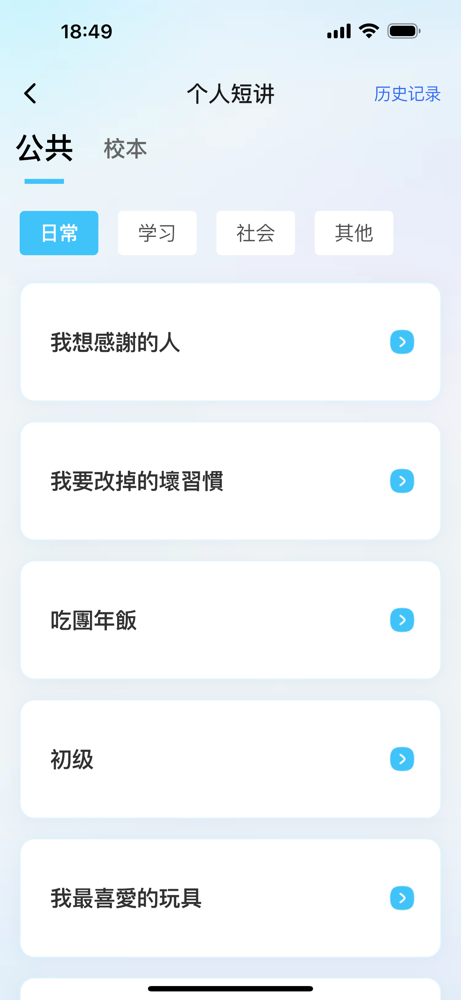
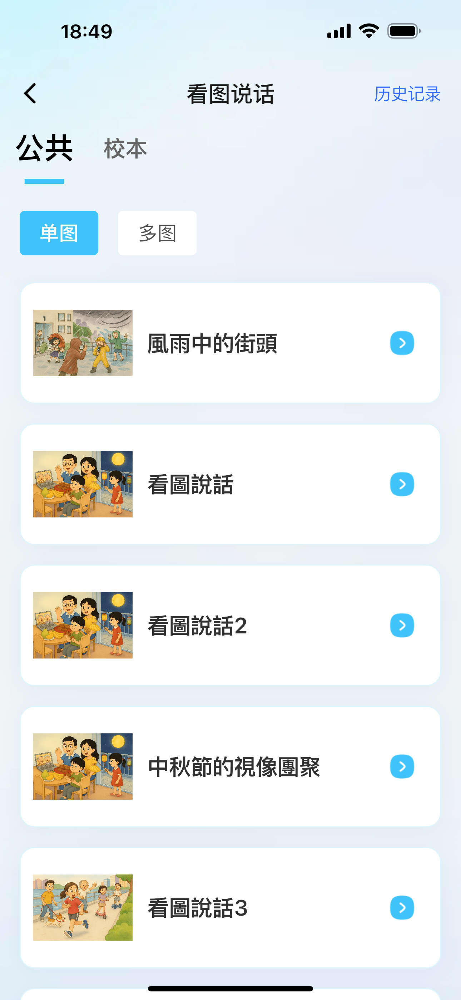
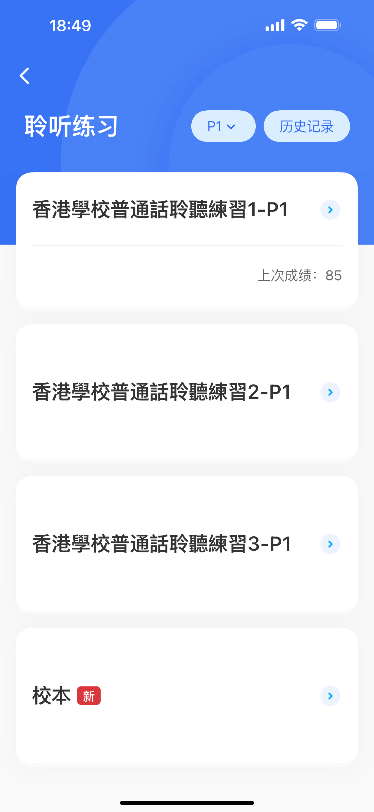
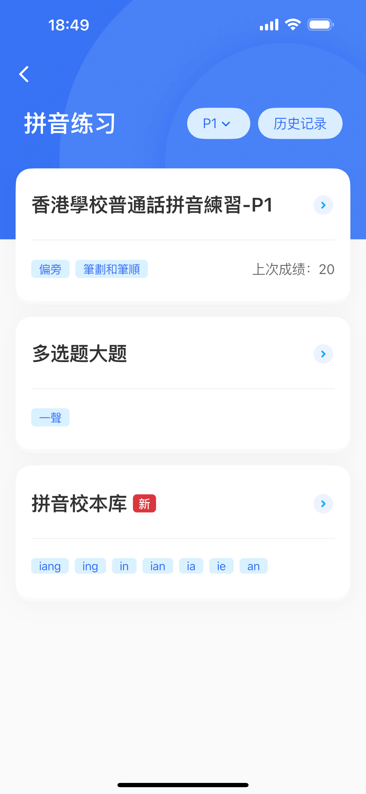

01 發音評測
標識位置：誦材標題，如《長歌行》。

以「新」標識提醒用戶發現新增素材，查看後取消提醒。
以下五項功能均需支援新增素材「新」標識。各圖的頁面大標題為功能名稱；標識放在列表內符合條件的素材／練習名稱右側。
標識位置：誦材標題，如《長歌行》。

標識位置：短講題目，如「我想感謝的人」。

標識位置：圖片素材標題，如「風雨中的街頭」。

標識位置：練習／素材條目名稱；圖中「校本」展示標識位置。

標識位置：練習／素材條目名稱；圖中「拼音校本庫」展示標識位置。

| 條件 | 結果 |
|---|---|
| 新增後第1天，尚未查看 | 顯示「新」 |
| 未查看，新增後29天23小時59分 | 顯示「新」 |
| 未查看，已滿30天 | 不顯示 |
| A、B均為新素材；查看A後，下次進入列表 | B仍有「新」，排在前面；A不再優先展示，按原有排序列於無標識素材中 |
| 新增後第2天點擊查看，再返回列表 | 該用戶不再顯示，其他未查看用戶繼續顯示至到期 |
| 編號／事項 | 需求與驗收 | 狀態 |
|---|---|---|
| 01 功能覆蓋與標識樣式 | 逐一檢查發音評測、個人短講、看圖說話、聆聽練習、拼音練習：新增素材標題右側有紅底白字「新」，普通素材不顯示。 | 待驗收 |
| 02 點擊消除 | 查看後返回列表、重新進入及刷新，該素材不再標新。 | 待驗收 |
| 03 期限邊界 | 未查看且未滿30天顯示，達到30天不顯示。 | 待驗收 |
| 04 用戶隔離 | A用戶查看後，B用戶仍按自己的查看狀態與素材期限展示。 | 待驗收 |
| 05 下次進入排序 | 查看部分新素材後重新進入列表，剩餘帶「新」的素材排在前面；兩組內部原有順序及篩選範圍不變。 | 待驗收 |
產品：上述五項功能中未展示的校本／合集等子頁是否一併覆蓋；聆聽與拼音頁面所示校本條目已納入本次範圍。
產品／研發：素材新增時間對應上傳、發布或首次對用戶可見的時間；到期時間需採用同一時間基準。
調用與狀態說明見接口說明。